Empire Stone × Empire Granite — QA
Golden Path — BOQ เส้นทาง 5: Custom FG โคมไฟ + พื้น
อัปเดตล่าสุด: 3 พฤศจิกายน 2569 (2026-11-03) · รันจริงบน eg-tst ผ่านหน้าจอ ใช้ผู้ใช้ emgdemo บริษัท Empire Granite
พื้นหินปนโคมประตู (Custom FG ราคาคงที่) · ยืนยันขายก่อนมี Cut List · Cut List ของโคมมาหลังขาย · ตัดหินและประกอบโคมทีละใบ · ผลิตพื้น · ส่งของ · ใบแจ้งหนี้ · เฉพาะ happy path
ประเด็นที่ต้องการการยืนยัน (ผู้จัดทำตัดสินใจแทนไปก่อน โปรดยืนยันหรือแจ้งให้ปรับ)
- ค่าแรงของโคมลงบัญชีชิ้นละ 10,000 (ตามหมวด Stone FG - Custom) — สูงกว่ากฎขั้นต่ำ 50% ของราคาขาย (12,500 − 4,074.56 = 8,425.44) ต้นทุนโคม 14,074.56 ต่อชิ้น (56% ของ 25,000) ขอยืนยันอัตรา 10,000 ต่อชิ้น
- ต้นทุน Slab ของโคมคิดทั้งแผ่น 4,074.56 ต่อโคม — ใช้จริง 0.665 จาก 4.35 ตร.ม. ระบบลงต้นทุนทั้งแผ่นเข้าโคม ไม่บันทึกเศษที่เหลือ ขอยืนยันว่ายอมรับ หรือต้องการคืนมูลค่าเศษเข้าสต็อก
- โคมที่ยังไม่มี Cut List ไม่มีใบสั่งผลิต — ใบสั่งผลิตของโคมเกิดตอนนำเข้า Cut List เท่านั้น ก่อนนั้นมีแค่งานพื้น ขอยืนยันว่าต้องการแบบนี้
- ไม่ลงต้นทุนวัสดุสิ้นเปลืองของโคม — หมวด Stone FG - Custom ยังไม่ได้ตั้งต้นทุนวัสดุสิ้นเปลืองมาตรฐาน ขอยืนยันว่าตั้งใจ หรือให้ตั้งอัตรา
- Slab ห้ามซ้ำระหว่างใบสั่งผลิตที่ยังไม่เสร็จ — ระบบเลือกให้คนละแผ่น และไม่ให้บันทึกถ้าเลือกซ้ำด้วยมือ
14Test Case ทั้งหมด
5หมวด
13High Priority
1Medium Priority
0Low Priority
เอกสารชุดใหม่ของ BOQ — เส้นทาง 5 (Custom FG แบบโคมไฟ)
- ทำตามทีละขั้นด้วย คู่มือกดตาม Custom FG โคมไฟ + พื้น · เอกสารนี้ใช้ตรวจว่าผลตรงตามที่ควรเป็น
- ต้องทำ คู่มือกดตาม Setup ระบบ ตอน 2 มาก่อน (สินค้า ZZ2 GUIDE MARBLE Countertop) และมี Slab ที่ Available อย่างน้อย 4 แผ่น · ไฟล์ Cut List: cutlist-import-zz2-lamps.xlsx
- ขอบเขต 14 เคส: สินค้า BOQ และใบเสนอราคา 3 · ยืนยันก่อนมี Cut List 1 · Cut List หลังขาย 3 · ตัดและประกอบโคม 4 · พื้น ส่งของ เก็บเงิน 3
- ชุด Custom FG แบบ Cut List ก่อนออกใบเสนอราคา (เจดีย์บัว) เป็นชุดแยก ดู Golden Path Custom FG · เส้นทาง BOQ อื่น: เส้นทาง 2 · เส้นทาง 4
A. สินค้าโคม BOQ และใบเสนอราคา
ตั้งสินค้า Custom FG · BOQ พื้น 1 โซน + โคม 2 โซน · ใบเสนอราคา · 3 test cases
| TC ID | Scenario | Precondition | Steps | ข้อมูลตัวอย่าง | Expected Result | Priority | ภาพหน้าจอ |
|---|---|---|---|---|---|---|---|
| TC-GP-BQ5-01 | ตั้งสินค้าโคม (Custom FG ราคาคงที่ ติดตามซีเรียล) โคมขายเป็นชิ้นราคาคงที่ ไม่คิดตาม ตร.ม. · ช่อง เป็น Custom FG ทำให้ใช้ค่าแรงมาตรฐานของหมวด Stone FG - Custom |
เข้าระบบเป็น Empire Granite · มีหมวด Stone FG - Custom |
|
ZZ2 โคมประตู · 25,000 บาทต่อชิ้น | หน้าสินค้า ZZ2 โคมประตู: Sales Price 25,000.00 · Category Stone FG - Custom · ช่อง Is Stone FG Product และ เป็น Custom FG ติ๊กอยู่ · Quantity On Hand 0.000 | High | 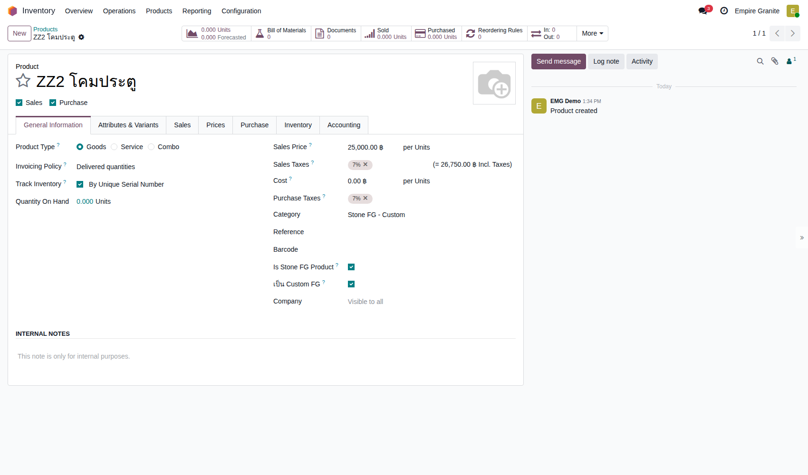 |
| TC-GP-BQ5-02 | สร้าง BOQ: พื้น 1 โซน และโคม 2 โซน โคมแต่ละใบแยกโซน (โคมประตูซ้าย / โคมประตูขวา) เพราะ Cut List ของแต่ละใบมาแยกและต้องตรงชื่อ · คลิกทีละช่องแล้วพิมพ์ อย่ากด Enter หรือ Tab ข้ามช่อง |
ทำ TC-GP-BQ5-01 เสร็จแล้ว · มีสินค้า ZZ2 GUIDE MARBLE Countertop · มีลูกค้า Demo Hotel Customer |
|
พื้น 7.2 ตร.ม. · โคม 2 ชิ้น × 25,000 | พื้น รวม 27,360.00 · โคมแต่ละบรรทัด Units 1.00 ราคา 25,000.00 · Amount Direct Cost 77,360.00 · Overhead & Profit 7,736.00 · Amount Total 85,096.00 · ได้เลข BOQ (รอบทดสอบ BOQ1185) | High | 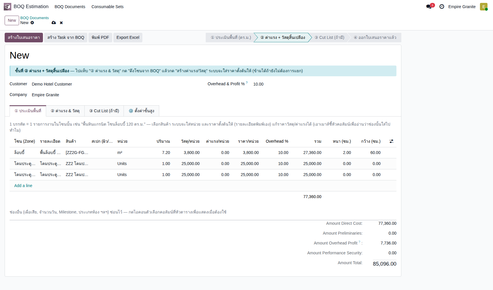 |
| TC-GP-BQ5-03 | ออกใบเสนอราคาจาก BOQ ราคาโคมคงที่ 25,000 ไม่ขึ้นกับ ตร.ม. ของสูตร |
ทำ TC-GP-BQ5-02 เสร็จแล้ว |
|
- | ใบเสนอราคา (รอบทดสอบ S01749) · ล็อบบี้ 7.200 m² × 3,800.00 · โคมประตูซ้าย 1.000 Units × 25,000.00 · โคมประตูขวา 1.000 Units × 25,000.00 · ค่าบริหารโครงการ 7,736.00 · ก่อน VAT 85,096.00 · VAT 5,956.72 · รวม 91,052.72 | High | 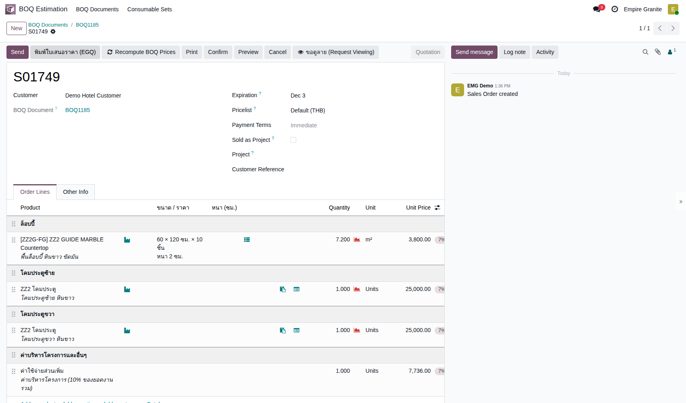 |
B. ยืนยันขายก่อนมี Cut List
ขายได้เลยแม้ยังไม่มีสูตรชิ้นหินของโคม · 1 test case
| TC ID | Scenario | Precondition | Steps | ข้อมูลตัวอย่าง | Expected Result | Priority | ภาพหน้าจอ |
|---|---|---|---|---|---|---|---|
| TC-GP-BQ5-04 | Confirm ก่อนมี Cut List ได้ใบสั่งผลิตเฉพาะพื้น ใบสั่งผลิตของโคมจะเกิดตอนนำเข้า Cut List เท่านั้น (อยู่ในประเด็นที่ต้องยืนยัน) |
ทำ TC-GP-BQ5-03 เสร็จแล้ว · มี Slab ZZ2 GUIDE MARBLE ที่ Available อย่างน้อย 4 แผ่น |
|
- | ใบสั่งขาย · ปุ่มสมาร์ท Delivery 1 · FG Production 1 (ของพื้น เช่น EG01/STFG/00469 ขนาด 7.200) · ไม่มีใบสั่งผลิตของโคม · ปุ่มด้านบนมี นำเข้า Cut List และ เทียบ ตร.ม. Cut List · ยอดเดิม 85,096.00 / 91,052.72 | High | 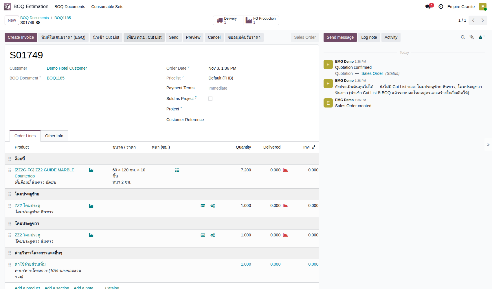 |
C. Cut List ของโคม (สูตรชิ้นหิน) หลังขาย
เลือกสินค้าหิน · นำเข้าไฟล์ 2 โซน · ระบบสร้างใบตัดหินและใบประกอบ · 3 test cases
| TC ID | Scenario | Precondition | Steps | ข้อมูลตัวอย่าง | Expected Result | Priority | ภาพหน้าจอ |
|---|---|---|---|---|---|---|---|
| TC-GP-BQ5-05 | เปิดแท็บ ③ Cut List และเลือกสินค้าหินของสูตร Cut List ของโคมระบุแต่ชิ้นหิน ไม่ใส่ตัวโคมเอง |
ทำ TC-GP-BQ5-04 เสร็จแล้ว |
|
- | ช่องแสดงแท็ก [ZZ2G-FG] ZZ2 GUIDE MARBLE Countertop · ปุ่ม นำเข้า Cut List และ ดาวน์โหลดเทมเพลต Cut List ขึ้น | Medium | 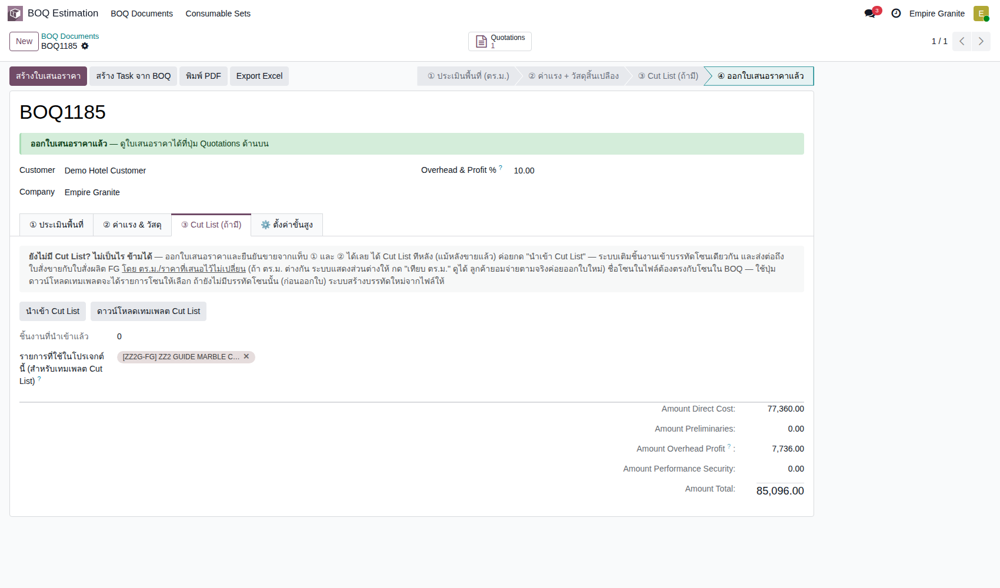 |
| TC-GP-BQ5-06 | นำเข้าไฟล์ Cut List ของโคม และตรวจหน้าตัวอย่าง เพราะขายไปแล้ว ระบบเติมเข้า บรรทัดเดิมของโซนเดียวกัน ราคาไม่เปลี่ยน · โซนในไฟล์ต้องตรงกับ BOQ ทุกตัวอักษร · ไฟล์ที่แก้ด้วยโปรแกรมต้องคงแถวหัวตารางไว้ที่แถวเดิม ไม่เช่นนั้นระบบแจ้งว่า ไม่พบข้อมูลที่จดจำได้ |
ทำ TC-GP-BQ5-05 เสร็จแล้ว · มีไฟล์ cutlist-import-zz2-lamps.xlsx |
|
โคมประตูซ้าย 8 ชิ้น + โคมประตูขวา 8 ชิ้น (ฐาน 30 × 30 · เสา 15 × 60 · หัวโคม 25 × 25) | หน้าตัวอย่าง 2 แถว: ประเภท ZZ2 GUIDE MARBLE Countertop · โซน โคมประตูซ้าย / โคมประตูขวา · จำนวนแถว 8 · ปริมาณรวม 0.6650 ตร.ม. ต่อโซน · ผลจับคู่ สูตรของ ZZ2 โคมประตู | High | 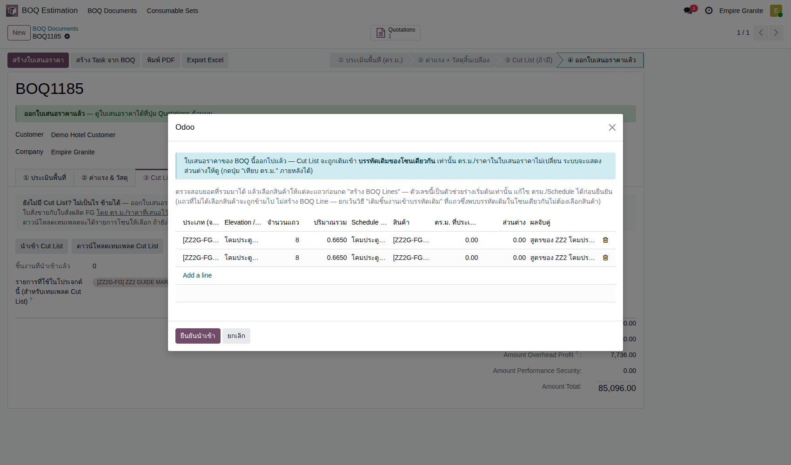 |
| TC-GP-BQ5-07 | ยืนยันนำเข้า: ระบบสร้างใบตัดหินและใบประกอบ ยอดเดิมไม่เปลี่ยน ชิ้นหินเก็บเป็นบรรทัดสูตร ไม่ขึ้นใบเสนอราคา ไม่นับในยอด BOQ |
ทำ TC-GP-BQ5-06 เสร็จแล้ว |
|
- | ข้อความ: เติมชิ้นงานเข้าบรรทัดเดิมแล้ว · โคมประตูซ้าย: สร้างบรรทัดสูตร ZZ2 GUIDE MARBLE Countertop 0.665 · S01749 โคมประตูซ้าย หินขาว: โหลดสูตรและสร้างใบสั่งตัด/ประกอบแล้ว (และโคมประตูขวา) · แท็บ ① เพิ่ม 2 บรรทัดสูตร m² 0.67 ราคา 3,800.00 รวม 0.00 · ยอดรวม BOQ ยัง 85,096.00 · ใบสั่งผลิตเพิ่มเป็น 5 ใบ (พื้น · ตัดหิน 2 · ประกอบ 2) | High | 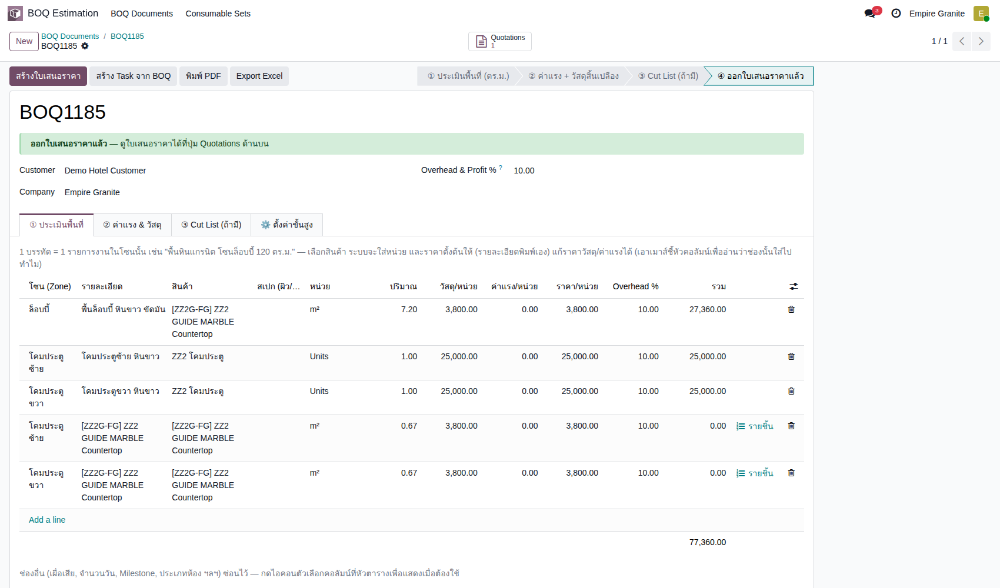 |
D. ตัดหินและประกอบโคม
ใบตัดหินแต่ละโคม · Slab คนละแผ่น · ใบประกอบ Produce All · ต้นทุนในรายการบัญชี · 4 test cases
| TC ID | Scenario | Precondition | Steps | ข้อมูลตัวอย่าง | Expected Result | Priority | ภาพหน้าจอ |
|---|---|---|---|---|---|---|---|
| TC-GP-BQ5-08 | ใบตัดหินโคมซ้าย: Slab ที่ระบบเลือก และย้ายไปสถานีตัด โคมแต่ละใบมี 2 ใบ: ใบประกอบ (งานกำหนดเอง Custom) และใบตัดหิน (Cutting Plan) |
ทำ TC-GP-BQ5-07 เสร็จแล้ว |
|
- | ใบประกอบ Draft ป้าย งานกำหนดเอง (Custom) สินค้า ZZ2 โคมประตู · ใบตัดหิน (EG01/STCPL/00385) แผน 0.67 ตร.ม. · พื้นที่งาน 0.67 · ต้องใช้รวมเผื่อเสีย 0.73 · แผ่นที่เลือก 4.35 ตร.ม. (BLK-26-1482-40) · หลัง Confirm สถานะ Confirmed | High | 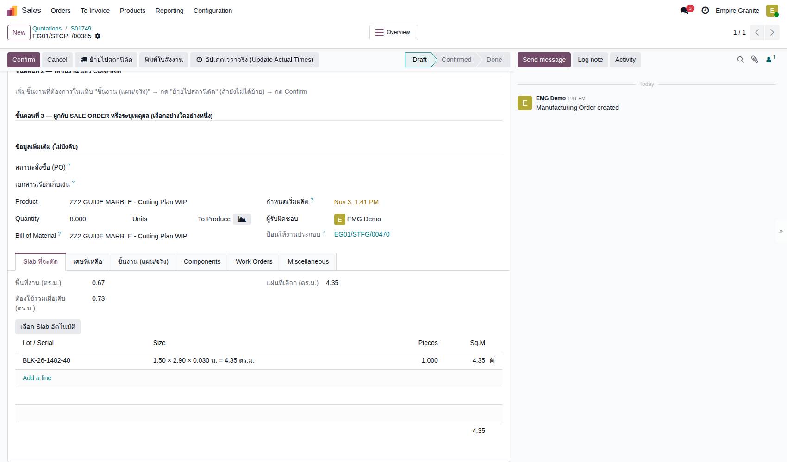 |
| TC-GP-BQ5-09 | ตัดหินโคมซ้ายเสร็จ ได้ Lot WIP ต้นทุน Slab ทั้งแผ่น 4,074.56 ถูกโอนเข้า Lot WIP ไม่ได้บันทึกเศษที่เหลือ (อยู่ในประเด็นที่ต้องยืนยัน) |
ทำ TC-GP-BQ5-08 เสร็จแล้ว |
|
- | ตารางชิ้นงาน 8 แถว ขนาดจริงเท่าแผน · ใบตัดหิน Done · ได้ Lot WIP CUT-EG01/STCPL/00385 ที่ Stone Production มูลค่า 4,074.56 | High | 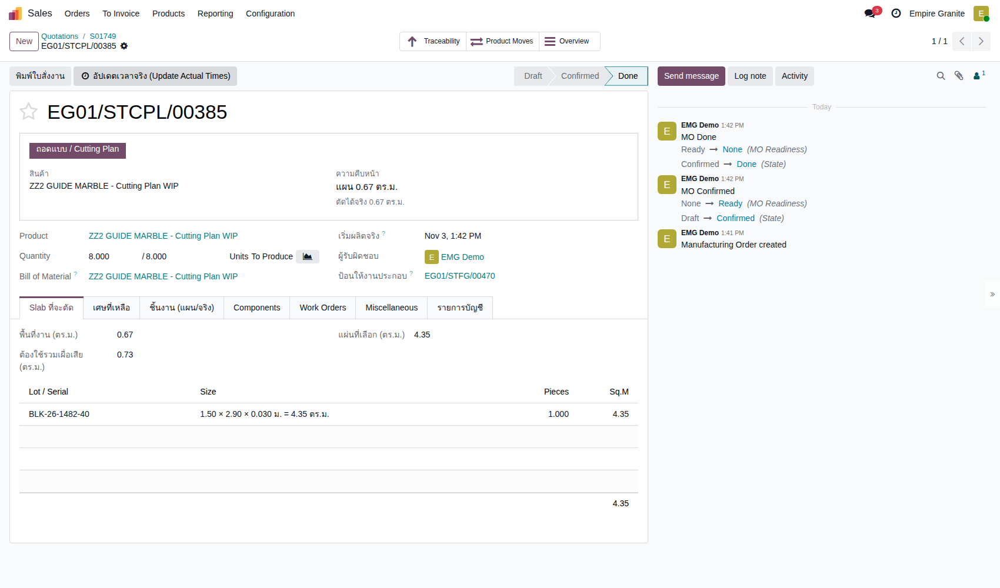 |
| TC-GP-BQ5-10 | ประกอบโคมซ้าย (Produce All) และดูต้นทุน ค่าแรง 10,000 ต่อชิ้นมาจากค่าแรงมาตรฐานของหมวด Stone FG - Custom ซึ่งสูงกว่ากฎขั้นต่ำ 50% (12,500 − 4,074.56) (อยู่ในประเด็นที่ต้องยืนยัน) |
ทำ TC-GP-BQ5-09 เสร็จแล้ว |
|
- | ใบประกอบ Done Quantity 1.000 / 1.000 · สมาร์ทปุ่ม Serial Numbers 1 (0000010) · รายการบัญชี Posted 3 รายการ: Inventory Valuation 4,074.56 สองรายการ และ FG Production Labor 10,000.00 | High | 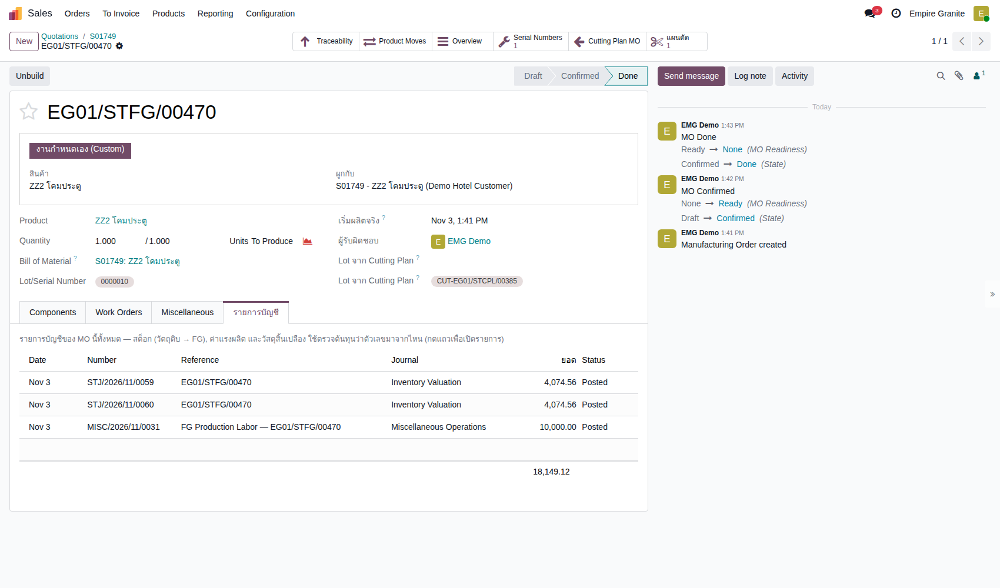 |
| TC-GP-BQ5-11 | ทำซ้ำกับโคมขวา ระบบเลือก Slab คนละแผ่น เคยเป็นบั๊ก (Slab ซ้ำ) แก้แล้วในเส้นทาง 3 · ที่นี่ใช้ตรวจซ้ำกับงานตัดหินของโคม |
ทำ TC-GP-BQ5-10 เสร็จแล้ว |
|
- | ใบตัดหิน (EG01/STCPL/00386) แผ่นที่เลือก BLK-26-1482-41 คนละแผ่นกับโคมซ้าย · ใบประกอบ (EG01/STFG/00471) Done ซีเรียลถัดไป (0000011) · ค่าแรง 10,000.00 | High | 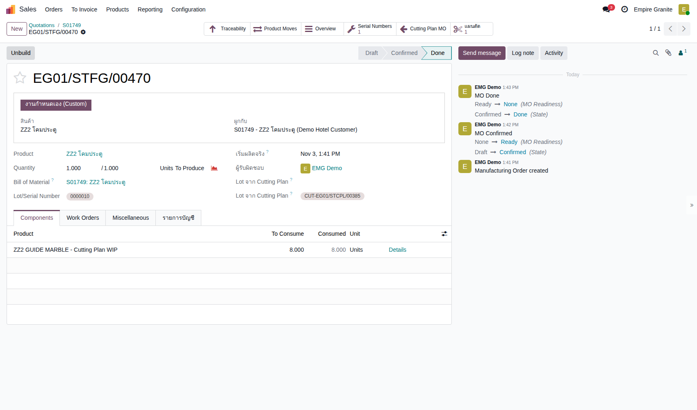 |
E. ผลิตพื้น ส่งของ และเก็บเงิน
ผลิตพื้น · ส่งของ 3 บรรทัด · ใบแจ้งหนี้เท่าใบเสนอราคา · 3 test cases
| TC ID | Scenario | Precondition | Steps | ข้อมูลตัวอย่าง | Expected Result | Priority | ภาพหน้าจอ |
|---|---|---|---|---|---|---|---|
| TC-GP-BQ5-12 | ผลิตพื้นจนเสร็จ และดูค่าแรง ใบสั่งผลิตพื้นเป็น Draft มาตั้งแต่ตอน Confirm และเลือก Slab ไว้ก่อน โคมจึงได้แผ่นถัดไป |
ทำ TC-GP-BQ5-04 เสร็จแล้ว |
|
- | แผ่นที่เลือก BLK-26-1482-38 และ -39 (8.70 ตร.ม. พอสำหรับงาน 7.92) · สถานะ Done · ค่าแรง FG Production Labor 10,800.00 (7.20 × 1,500) | High | 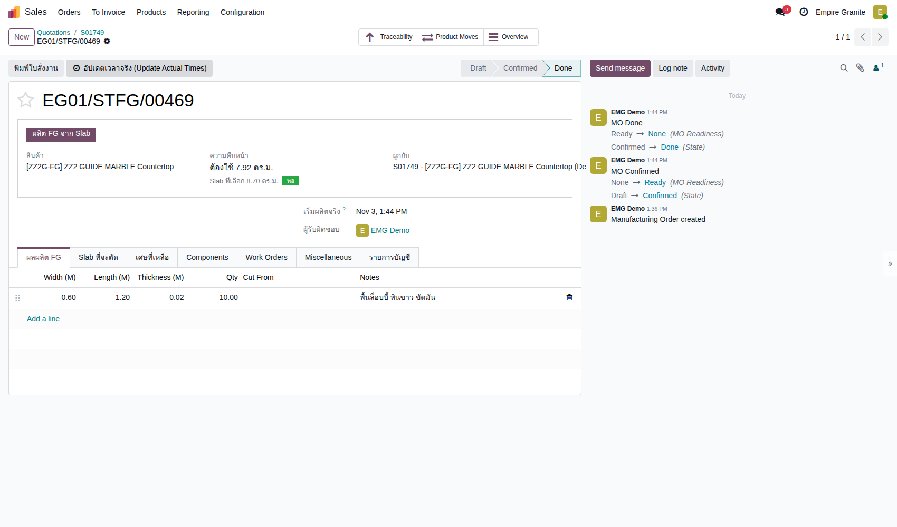 |
| TC-GP-BQ5-13 | ส่งของพื้นและโคมในใบส่งของใบเดียว โคมใช้ซีเรียลที่ผลิตไว้ ระบบจองให้เอง |
ทำ TC-GP-BQ5-11 และ TC-GP-BQ5-12 เสร็จแล้ว |
|
- | ใบส่งของ (EG01/OUT/00755) Ready ก่อนกด · 3 บรรทัด: ZZ2G-FG 7.200 m² · ZZ2 โคมประตู 1.000 · ZZ2 โคมประตู 1.000 · หลัง Validate Done | High | 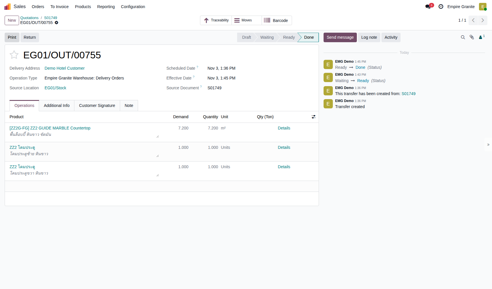 |
| TC-GP-BQ5-14 | ออกใบแจ้งหนี้ ไม่มีส่วนต่างพื้นที่ ใบแจ้งหนี้จึงเท่าใบเสนอราคา · ต้นทุนรวมในรายการบัญชี 47,098.24 (พื้น 8,149.12 + 10,800.00 · โคมใบละ 4,074.56 + 10,000.00) |
ทำ TC-GP-BQ5-13 เสร็จแล้ว |
|
- | ใบแจ้งหนี้ (รอบทดสอบ INV/2026/00018) Posted · พื้น 7.200 × 3,800.00 · โคมประตูซ้าย 1.000 × 25,000.00 · โคมประตูขวา 1.000 × 25,000.00 · ค่าบริหารโครงการ 7,736.00 · ก่อน VAT 85,096.00 · VAT 5,956.72 · รวม 91,052.72 | High | 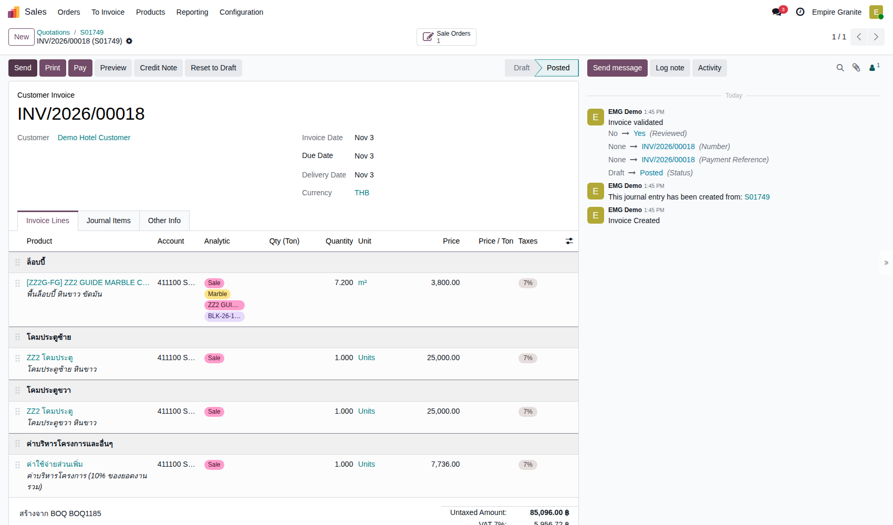 |